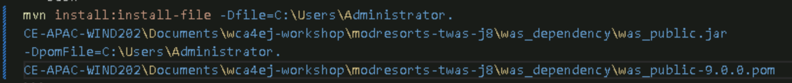
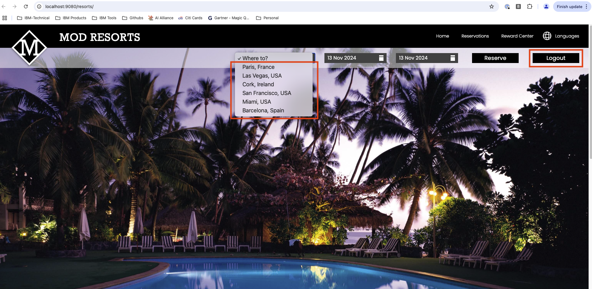
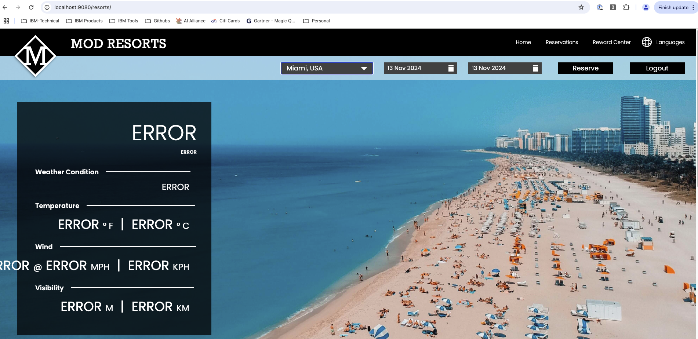
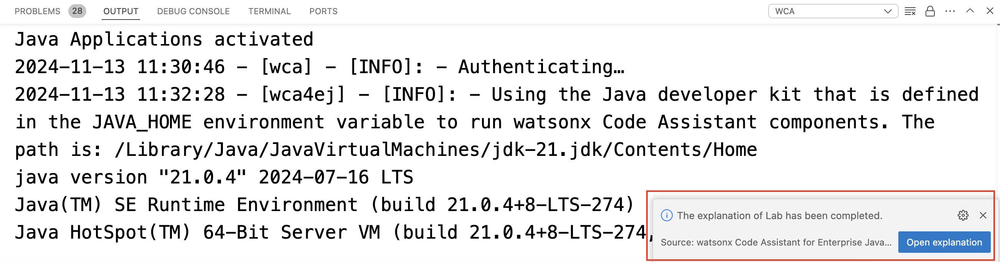

Lab1: コード解説機能
このページでは、Lab1を完了するための手順を順を追って説明しております。
Lab1 の範囲:
- サンプル・コードアセットのダウンロード
- サンプル・アプリケーション
modresrotsの探索 - wCA による
modresrotsアプリケーションの解説の生成
1. サンプル・コードアセットをダウンロードする
GitHub リポジトリを任意の場所にGit cloneします。
2. アプリケーションプロジェクトのビルド
- ターミナルを開き、プロジェクトフォルダに移動後、
was_dependencyフォルダを開きます。
Windowsユーザーの場合は、ビルドファイル was_public.jar および was_public-9.0.0.pom のフルパスを指定する必要があるかもしれません。

3. Liberty アプリを見てみる
VSCodeマーケットプレイスからLibertyToolsをインストールすると、エクスプローラーにLiberty Dashboardセクションが追加されます。「Add project to Liberty Dashboard」をクリックし、modresort-twas-j8フォルダーへのパスを入力します（このプロジェクトで開いた状態で操作した場合は自動的に入力されます）。
適切なプロジェクトを選択すると、modresrots アプリが表示されます。アプリを右クリックして起動します。

VSCode は必要なパッケージを自動的にダウンロードします。ターミナルで確認できます。

アプリが起動したら、URL（基本的には http://localhost:9080/resorts/）を取得し、ブラウザで開くことでウェブアプリを確認できます。
[IMPORTANT] このアプリケーションはJava8でWebSphere用に構築されている一方で、Liberty in Java21を使用して実行しているため、アプリケーションは正常に起動したものの、このランタイムの移行と Java バージョンのアップグレードによりエラーが発生した箇所が2箇所あります。

1つ目の不具合は、ドロップダウンメニューのWhere to?をクリックして任意の場所を選択すると、位置情報モジュールにエラーが表示されます。

2つ目の不具合は、Logout ボタンで、クリックしても機能しません。

これらのエラーを、後のラボで修正していきます。
4. wCA によるアプリケーションの解説の生成
プロジェクト全体を理解するには、modresorts-twas-j8 フォルダを右クリックして、watsonx Code Assistant - Explain Application を選択します。
VSCode が処理に時間がかかると通知します。Proceed with code analysisをクリックします。
分析には1～2分かかる場合があります。右下にプロンプトが表示されます。

ここまで進めると、レポートを開き、詳細を読み進めることができます。